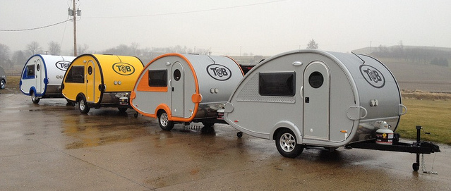

How Did We Get Here?
Late in 2002, an idea was hatched in North Canton, Ohio to bring the past to the present. The idea to resurrect and take teardrop camper trailers to the masses was taken over to a couple brothers in Elkhart, Indiana where they began prototyping a 4Ũ8 Retro trailer in their garage.
As the quantity of trailers ordered increased, the operation was moved out of a garage and into a manufacturing facility. Over the next couple years, production gradually and consistently ramped up from a 2-3 a week to a 3-4 a day.
From the twenty or so units produced during that first year to the thousands that are now out on the highways and bi-ways across the globe (17 different models now available), Little Guy Teardrop Camper Trailers are the most identifiable, economical and modern teardrops on the road today.